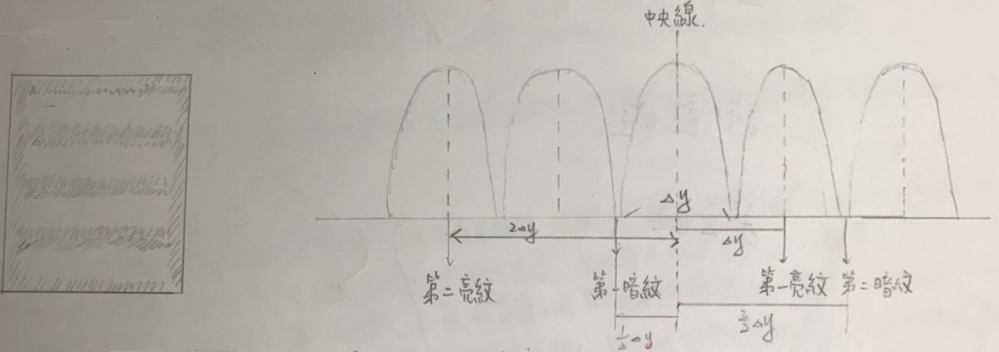
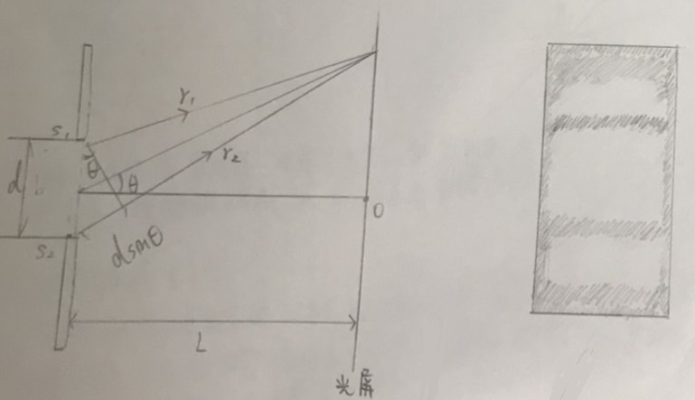
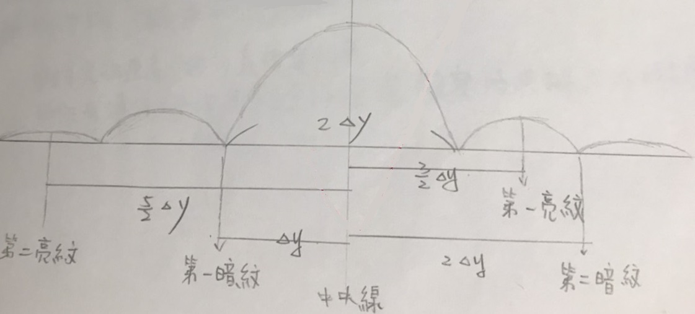
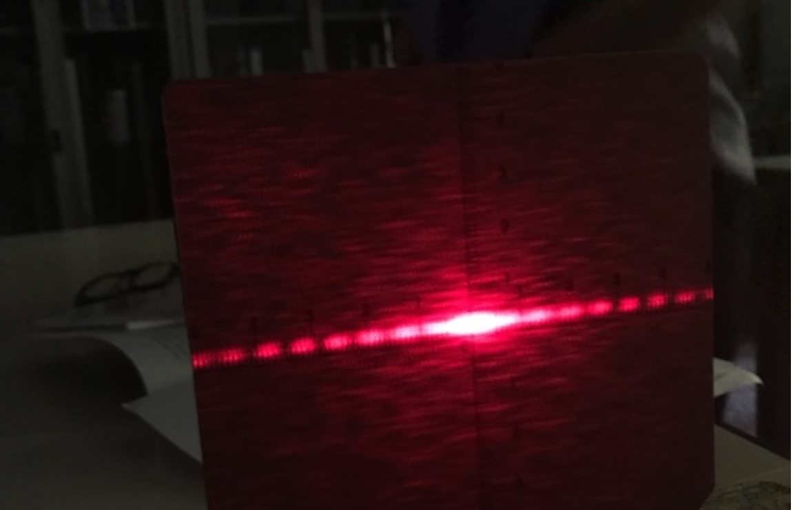
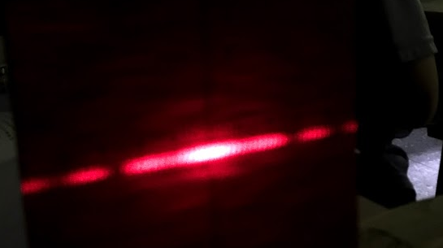
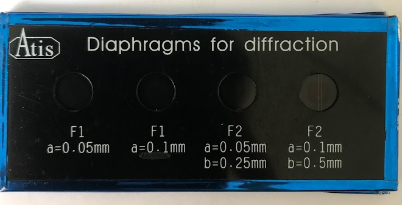

干涉與繞射
實驗目的:
(一)觀察干涉與繞射現象
(二)利用雙狹縫干涉現象，測量單色光波長
(三)利用單狹縫繞射現象，測量單狹縫寬度。
實驗原理:
[雙狹縫干涉]
1.兩光源產生清晰可見干涉條紋的條件。
(1)需有屏幕投射干涉條紋 (2)光源必須甚小
(3)光源距離也需甚小 (4)兩光源須為同調光
2.干涉條紋

※ △y = rλ/d = 中央條紋寬度 = 兩側亮紋寬度 = 兩側亮紋間距 = 兩側暗紋間距
※ 各亮紋的明暗度均相等。
[單狹縫繞射]


(1)中央亮帶寬度: 2 * △y = 2rλ/d
(2)兩側亮帶寬度 = 兩側亮紋間距 = 兩側暗紋間距 = △y
(3)中央亮帶最亮，其次向外遞減。
實驗步驟:
[實驗一]
一、將雷射光源、狹縫、屏幕垂直利於軌道上。
二、打開光源，調整雙狹縫片與屏幕的位置，使干涉條紋落在屏幕的中央附近，且兩邊對程於中央亮紋。
三、紀錄屏幕上相鄰兩暗紋之間的距離，並同時記錄狹縫到屏幕的距離及狹縫間距，即可求出雷射波長。
[實驗二]
一、同實驗裝置一，僅將雙狹縫改為單狹縫。
二、調整單狹縫與雷射光源的位置，使雷射光恰好射在狹縫處，可得狹縫繞射過後的條紋投射在屏幕。
三、紀錄屏幕上相鄰暗紋間的距離，並也記錄屏幕與狹縫的距離，即可求出單狹縫寬度。
實驗圖片:
狹縫圖片 狹縫片


